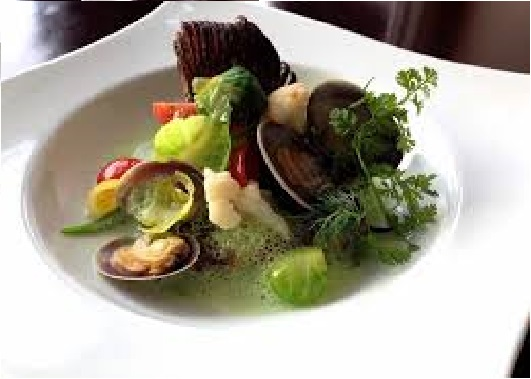

法式料理菜單
一頓法式料理通常包含三道菜，開胃菜(Hors d'œuvre)、主菜(Plat principal)、
乳酪或甜點(Dessert)，有時在甜點之前會先呈上沙拉。但值得一提的是，非常傳統的一套法國料理套餐其實會有十三道菜，
包含了開胃菜(Hors d'œuvre)、主菜(Plat principal)、乳酪或甜點(Dessert)以及酒類。
法國比較具有特色的食品有：青蛙腿（grenouille）、燉雞（coq au vin）、法國蝸牛（escargot）、
油封鴨（confit de canard）；主食主要是麵包，具有法國特色的麵包有可頌（croissant）
和棍式麵包（baguette）。

連到首頁
連到第3頁
連到第4頁
連到第5頁